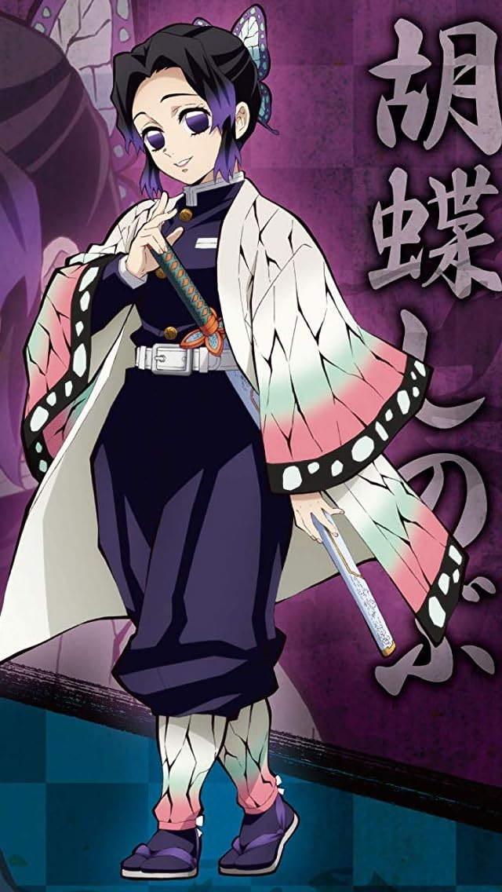

アサギマダラとは？
アサギマダラ（浅葱斑）は、タテハチョウ科マダラチョウ亜科に属する大型のチョウです。
日本列島を春に北上、秋に南下し、数百～数千kmもの長距離を移動する「旅する蝶」として知られています。
わが家の飛来・観察記録
わが家を訪れる蝶を、写真とともに日付順で記録していきます。
📖 アサギマダラの詳細
数百～数千kmを移動する「旅する蝶」
日本に飛来するアサギマダラという蝶は、中国、朝鮮半島、台湾などにも分布し、その名前のごとく爽やかな浅葱（あさぎ）色で、とても日本的で優雅に見えます。
アサギマダラ（浅葱斑）は、毎年数百～数千kmもの長距離を移動することで知られるチョウで、特に日本列島を南北に移動します。
春の北上ルート｜3月下旬～7月上旬
冬を暖かい南西諸島や台湾で過ごしたアサギマダラは、春になると繁殖のために本州・東北地方・北海道方面へ北上します。
秋の南下ルート｜9月下旬～11月上旬
秋になると、気温の低下に伴って、アサギマダラは南方への大移動を開始します。
北上ルートと南下ルートでは、通るルートにも違いがあります。
春は水前寺菜、秋はフジバカマへ
アサギマダラは、春は水前寺菜に、秋はフジバカマに飛来します。成虫は台湾などから飛来し、春は水前寺菜に、秋はヒヨドリバナ・フジバカマに吸蜜します。
幼虫の食草と毒を利用した身の守り方
幼虫が餌にするのは、キジョラン（鬼女蘭）やカモメヅル類などです。これらの食草からアルカロイド類を体内に取り込み、捕食者から身を守ることにつながります。
また、成虫が好んで吸蜜するフジバカマやヒヨドリバナなどにはピロリジジンアルカロイド（PA）を含むものがあり、特に雄成虫がこうした成分を利用することが知られています。
鳥などの捕食者にとって食べにくい存在になることは、体が大きくゆっくり飛翔するアサギマダラが身を守り、長い旅を続けるうえで重要な仕組みの一つです。
※通常の園芸作業や接触で過度に心配する必要はありませんが、植物を食用にする場合は種類・安全性を確認してください。
「アサギマダラ（浅葱斑）」という名前
「アサギマダラ」は漢字で「浅葱斑」と書きます。その名は、翅（はね）の斑模様が鮮やかな浅葱色（あさぎいろ）に見えることに由来します。
浅葱色とは、明るい青緑系の色を指し、新選組の羽織の色としてもよく知られています。
『鬼滅の刃』胡蝶しのぶのモデルとなったアサギマダラ
この「アサギマダラ」をモチーフに描かれているのが、『鬼滅の刃』で人気のキャラクター、鬼殺隊・蟲柱（むしばしら）の胡蝶しのぶです。蝶の形をした髪飾りや、羽織に描かれた模様のモデルが、まさにアサギマダラだとされています。
アサギマダラは毒をもつ蝶であることから、その特徴がキャラクター設定にも反映されています。幼虫の時期に食草から取り込んだ成分を利用して身を守ることや、鮮やかな姿で捕食者に警戒を促す点も特徴のひとつです。
一度捕食した鳥などが「この蝶は食べにくい」と学習し、次から避けるようになることは、アサギマダラにとって大切な防御手段です。
胡蝶しのぶもまた、腕力が弱く鬼の首を斬ることはできませんが、自ら調合した藤の花の毒を刀に仕込み、鬼を倒す術を編み出しました。蝶と毒を象徴的に組み合わせたキャラクターとして、アサギマダラとの共通点がとても印象的です。
